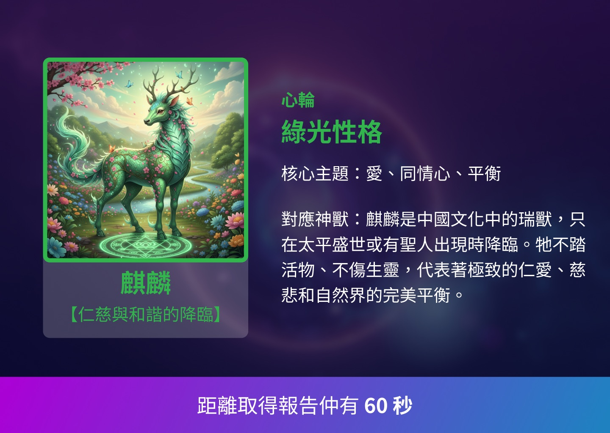
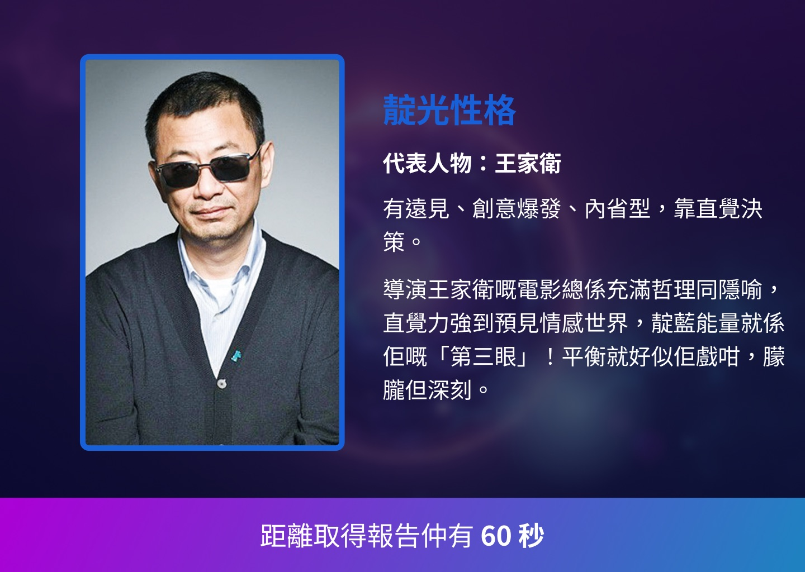

Scaling metaphysics without flattening the experience.
BigBigAir spans branded readings, feng shui property analysis and paid advisory services. As the Product/UX Designer, I designed the system underneath — reusable foundations plus guided input, analysis, report and purchase patterns that preserve the character of each offering without rebuilding the product every time.
The problem
As BigBigAir expanded into different readings, property analysis and paid services, every offering introduced new inputs, reports and purchase steps. Without shared patterns, each feature risked becoming a bespoke flow — harder for customers to learn and harder for the product to evolve.
How might each metaphysics service keep its own character while reusing the same interaction and delivery system underneath?
What I did
Built the product foundations
- Structured foundations plus seven reusable groups: actions, forms, navigation, data display, overlays, icons and service patterns, all with consistent states
- Tokenised colour, typography and spacing so mobile flows and content-heavy reports share one visual and interaction language
Turned complex services into repeatable patterns
- A guided-input pattern for personal details, floor plans, photos and location data, with review states before submission
- A modular report structure for scores, charts, directional findings, recommendations and the next action
- Flexible content modules that let branded experiences such as aura reports keep their storytelling without changing the core controls
Connected the full service journey
- Mapped selection, purchase, evidence submission, professional reply, report delivery and next steps as one coherent product flow
One report system, many identities.
A repeatable information structure gives every reading clarity while colour, imagery and narrative preserve its own character.


The outcomes
- One documented foundation now supports seven reusable component and service-pattern groups
- Three product areas aligned — feature exploration, core mobile analysis and service purchase share the same interaction vocabulary
- A reusable delivery model lets future services extend established input, report and purchase patterns instead of starting from zero